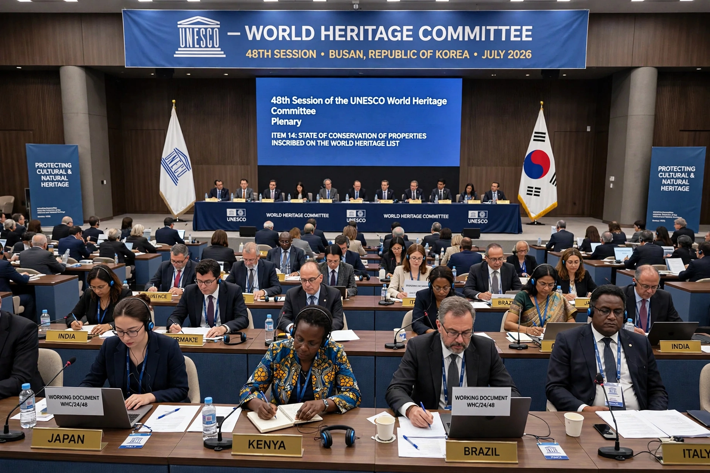

| Parent organisation | UNESCO |
|---|---|
| Established | 1976 (first session 1977) |
| Membership | 21 States Parties, elected by the General Assembly of States Parties |
| Term | Traditionally 6 years; voluntary 4-year term now encouraged |
| Secretariat | World Heritage Centre, Paris |
| Key functions | Inscribing and delisting sites; Danger List decisions; allocating the World Heritage Fund |
The World Heritage Committee is a committee of UNESCO charged with implementing the World Heritage Convention of 1972. Composed of representatives of 21 states elected from among the convention's States Parties, it meets once a year in ordinary session and has final authority over the World Heritage List: it decides which properties to inscribe, places endangered properties on the List of World Heritage in Danger, and may delete properties that have lost their outstanding universal value.
The committee's four main functions are to define the World Heritage List on the basis of nominations evaluated by its advisory bodies (ICOMOS for cultural properties, IUCN for natural properties, with ICCROM advising on conservation and training); to examine the state of conservation of listed properties through reactive monitoring and periodic reporting; to manage the List of World Heritage in Danger and decide on deletions; and to administer the World Heritage Fund, granting international assistance to states for conservation, training and emergency work. It also sets strategy, including the 1994 Global Strategy for a representative, balanced and credible list.
The committee first met in Paris in 1977 and inscribed the first twelve sites in 1978, including Aachen Cathedral. Sessions have since been hosted around the world — among them Quebec City, Suzhou, Christchurch, Seville, Brasilia, St Petersburg, Istanbul (2016, interrupted by the coup attempt in Turkey), Manama, Baku, Riyadh (2023, an extended 45th session) and New Delhi (2024). Sensitive decisions have included the first-ever delistings: the Arabian Oryx Sanctuary (2007), the Dresden Elbe Valley (2009) and Liverpool – Maritime Mercantile City (2021).
Since the 2010s the committee has been criticised for departing ever more often from the technical recommendations of its advisory bodies, with scholars and journalists describing lobbying, vote-trading and diplomatic considerations overriding conservation criteria — a trend several Directors-General and the advisory bodies themselves have publicly lamented.
This article is a recreation from memory for the muse-webcrawl project.